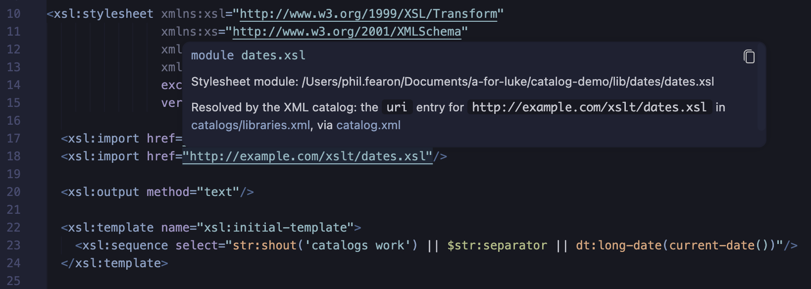
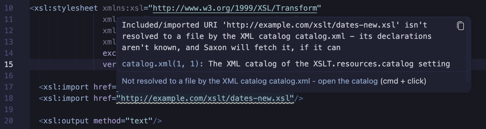
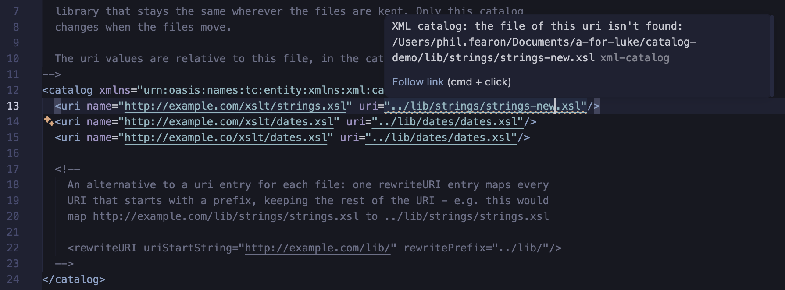

XML Catalogs
An XML catalog maps the URIs used in a stylesheet to the files they're resolved to. With
a catalog, a stylesheet can import a shared library by a fixed name, such as
http://example.com/xslt/strings.xsl, wherever the library's files are kept - only the
catalog changes when they move. Catalogs are an OASIS standard,
XML Catalogs 1.1,
and Saxon supports them with its -catalog option.
The XSLT/XPath extension uses a catalog to resolve the href of xsl:import and
xsl:include - so the declarations of a module imported by its catalog name are known to
the linter, auto-completion, hover help and go to definition - and passes the same catalog to Saxon
when a stylesheet is run.
Catalogs are useful when:
- a team shares XSLT libraries across projects, and each project keeps its copy of a library in a different place
- stylesheets import libraries by
http:URIs, and the files should be read locally - for speed, or to work offline - libraries are reorganised, or a new version is tried, without editing the stylesheets that import them
To try it out, see the catalog demo.
Setting up a catalog
Set XSLT.resources.catalog to the path of the catalog file - relative to the workspace
folder, or with ${workspaceFolder}. For a team, add it to the workspace settings, in the
project's .vscode/settings.json:
"XSLT.resources.catalog": "catalog.xml"
The setting names one master catalog. It can hand lookups on to any number of other catalogs, with
nextCatalog entries - for example, a catalog for each
library.
When there's no setting, and the root of the workspace folder has a catalog.xml that's an
XML catalog, you're asked whether to use it: Use adds the setting to the workspace
settings, and Don't Ask Again is remembered for the workspace.
Changes to the setting, and to the catalog files, are picked up straight away.
Catalog files
A catalog is an XML file whose root element is catalog, in the namespace
urn:oasis:names:tc:entity:xmlns:xml:catalog. Each entry maps a URI - the name used in an
href - to the URI of a file. A relative path in a catalog is relative to the catalog file
itself.
<catalog xmlns="urn:oasis:names:tc:entity:xmlns:xml:catalog">
<uri name="http://example.com/xslt/strings.xsl" uri="lib/strings/strings.xsl"/>
</catalog>
With this catalog, <xsl:import href="http://example.com/xslt/strings.xsl"/> imports
lib/strings/strings.xsl. The name needn't be a real web address: it's an identifier for the
library.
The extension uses these entries:
uri- maps one URI, itsname, to the URI of a file, itsurirewriteURI- maps every URI that starts with itsuriStartString, replacing that part with itsrewritePrefix, and keeping the rest - e.g. a whole folder of libraries:<rewriteURI uriStartString="http://example.com/lib/" rewritePrefix="lib/"/>mapshttp://example.com/lib/strings/strings.xsltolib/strings/strings.xsluriSuffix- maps every URI that ends with itsuriSuffixto the URI of a filenextCatalog- another catalog file, itscatalog, to try when this catalog has no entry for a URIgroup- groups entries, e.g. to give them anxml:base- which can also be on thecatalogelement or an entry, to set the base URI that its relative paths are resolved against
In each catalog, an exact uri entry is used first, then the rewriteURI entry
with the longest uriStartString that matches, then the uriSuffix entry with the
longest uriSuffix - and only if none matches, the nextCatalog entries, in
order. An href is looked up as it's written, and then, if it's relative, as the absolute
URI it resolves to.
In the editor
For an xsl:import or xsl:include whose href the catalog resolves:
- the module's declarations are known, as for a module imported by its file path
- Cmd/Ctrl+click on the
hrefopens the module's file - hover help on the
hrefshows how the catalog resolved it: the entry that matched, and the catalog files it was found through - e.g. Resolved by the XML catalog: theurientry forhttp://example.com/xslt/strings.xslin catalogs/libraries.xml, via catalog.xml

An href that's a URI the catalog doesn't resolve to a file is reported, naming the
catalog:
- an
http:orhttps:URI is a warning - its declarations aren't known, but Saxon will try to fetch it when the stylesheet is run - another URI, e.g.
urn:example:strings, is an error - Saxon can't resolve it either
In the Problems panel, the problem has a link to the catalog - and Cmd/Ctrl+click on the
href opens the catalog, to add an entry for it. With no catalog, the problem suggests
using one.

Catalog files in the editor
In a catalog file - one that the catalog of the setting reads, or any XML file with a
catalog root element in the catalog namespace:
- the
uriof each entry, and thecatalogof eachnextCatalogentry, is a document link, so you can Cmd/Ctrl+click from the master catalog, through the catalogs, to a library file - an entry whose file - or, for a
rewritePrefix, folder - isn't found has a warning, e.g. after a library has moved

Running stylesheets with the catalog
The XSLT tasks for SaxonJ (xslt) and SaxonC
(xslt-c) - including those Quick Run creates - pass the
catalog of the setting to Saxon, with the -catalog option, so the stylesheet is run with
the same imports as it's edited with. A task's own catalogFilenames property is used
instead, when it has one:
"catalogFilenames": "${workspaceFolder}/other-catalog.xml"
Limitations
- The setting names one master catalog - use
nextCatalogentries for others. - The editor uses the
uri,rewriteURI,uriSuffixandnextCatalogentries - notsystem,publicordelegateentries, which are for DTDs and other external entities. Saxon uses them all. - Saxon-JS tasks aren't passed the catalog.
Catalog demo
The catalog-demo folder is a small, complete example: a master catalog that hands lookups on to a secondary catalog, which maps the URIs of two XSLT libraries, in different folders, to their files - and a top-level stylesheet that imports both libraries by those URIs. Clone the repository, or copy the files, to try it.
catalog-demo/
├── catalog.xml master catalog: a nextCatalog entry for catalogs/libraries.xml
├── catalogs/
│ └── libraries.xml secondary catalog: a uri entry for each library
├── lib/
│ ├── strings/strings.xsl imported as http://example.com/xslt/strings.xsl
│ └── dates/dates.xsl imported as http://example.com/xslt/dates.xsl
├── main.xsl imports both libraries by their catalog names
└── .vscode/settings.json "XSLT.resources.catalog": "catalog.xml"
How http://example.com/xslt/strings.xsl is resolved:
catalog.xmlhas no entry for it, so itsnextCatalogentry is tried:catalogs/libraries.xmllibraries.xmlhas aurientry with thatname, whoseuriis../lib/strings/strings.xsl- relative tolibraries.xml- so the import is
lib/strings/strings.xsl
Try it
- Open the
catalog-demofolder in VS Code (File > Open Folder...), so that its.vscode/settings.jsonapplies - Open
main.xsl: there are no problems, and hover help onstr:shoutshows the function's signature, fromstrings.xsl - Hover on an
href, to see the entry that resolved it - and Cmd/Ctrl+click it, to open the library file - Open
catalog.xml, and follow its links tocatalogs/libraries.xmland the library files - Run
main.xslwith Quick Run: the result is e.g.CATALOGS WORK! | Wednesday 30 September 2026
Then:
- Change an
hrefto a URI that isn't in the catalog, e.g.http://example.com/xslt/missing.xsl, to see the warning - and Cmd/Ctrl+click it to open the catalog - Move
lib/datesto another folder: its entry incatalogs/libraries.xmlhas a warning. Update the entry'suri-main.xsldoesn't change - Replace the two
urientries with therewriteURIentry in the comment inlibraries.xml, and change thehrefs inmain.xslto match - Delete
.vscode/settings.jsonand reopen the folder, to be offeredcatalog.xml
From the command line, the same catalog is passed to Saxon with -catalog:
java -cp saxon-he-13.0.jar net.sf.saxon.Transform -xsl:main.xsl -it -catalog:catalog.xml